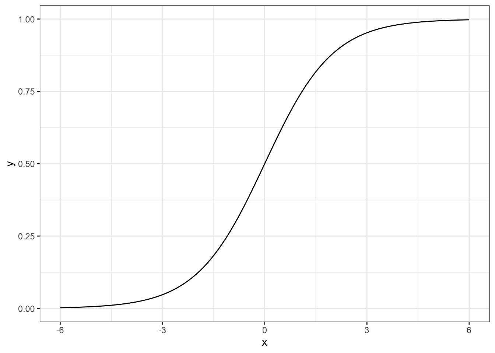
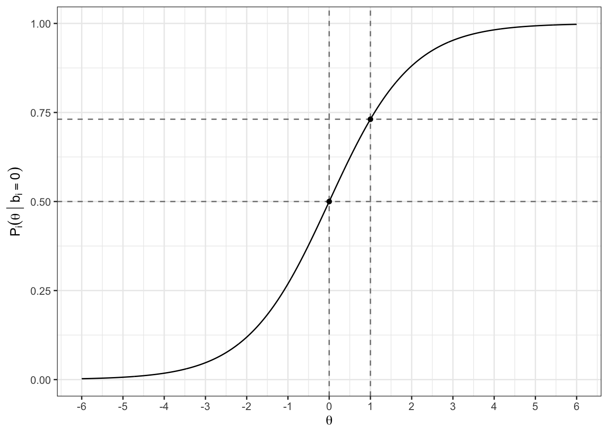
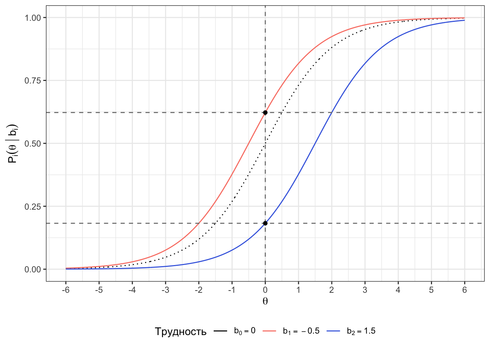
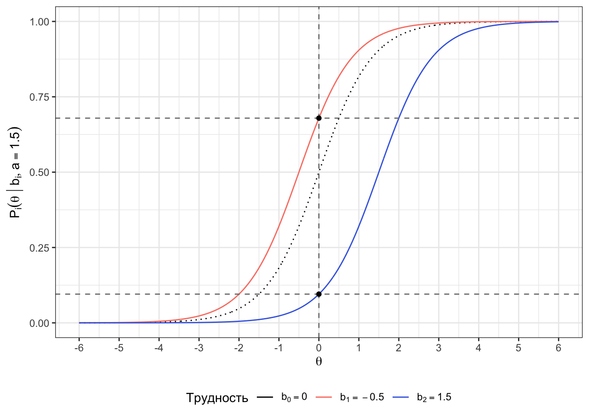
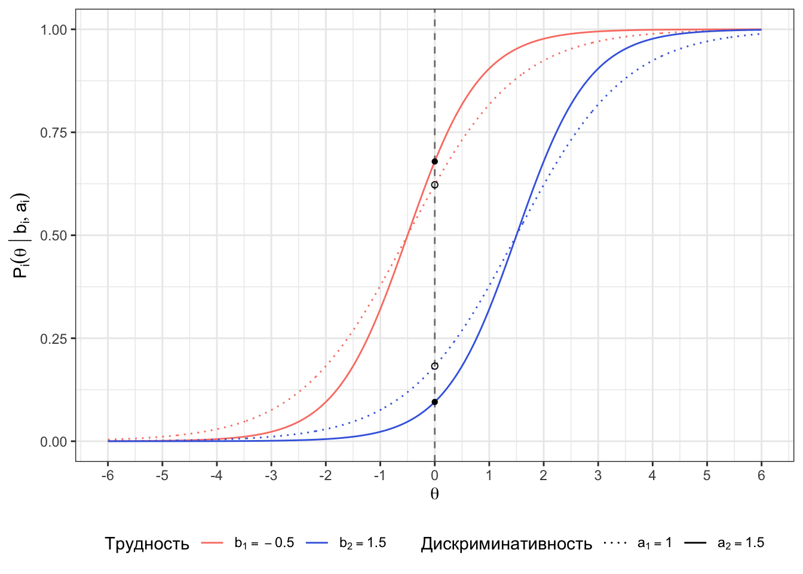
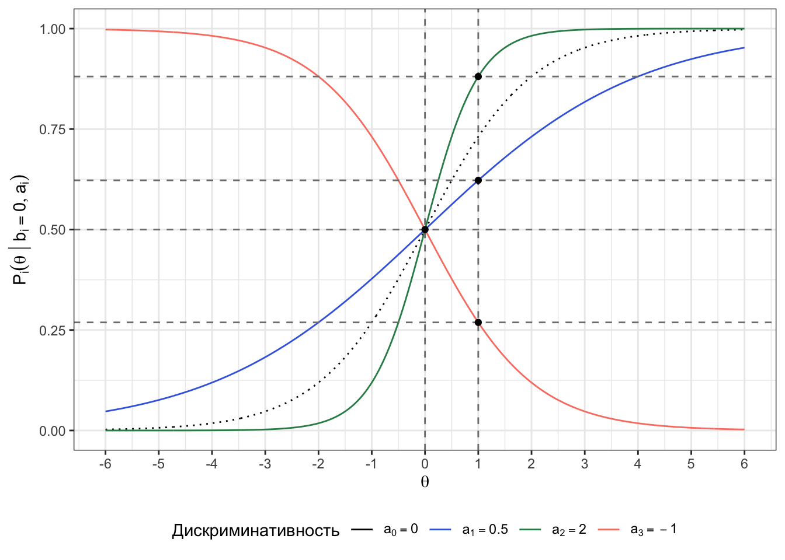
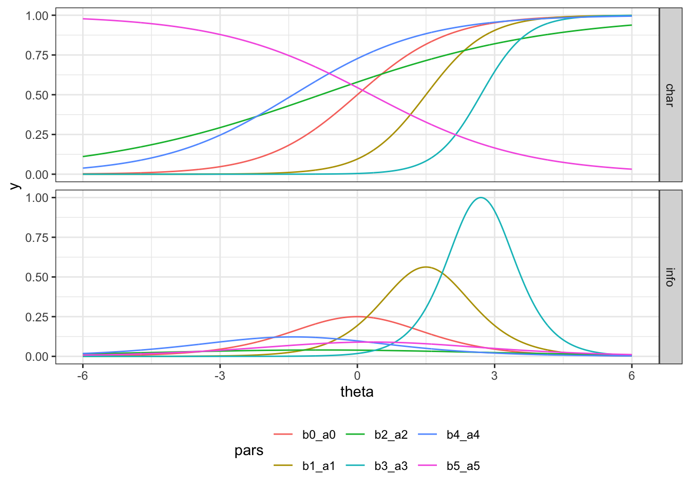

Вступление
19.1 Ограничения классической теории тестирования
19.2 Модели для дихотомических пунктов
\[ y = \frac{e^x}{1 + e^x} \]
19.2.1 Однопараметрическая модель
\[ \mathbb{P}(X_{is} = 1 \mid \theta_s, b_i) = \frac{e^{(\theta_s - b_i)}}{1 + e^{(\theta_s - b_i)}} \tag{19.1}\]
Это вообще будет работать? Давайте проверим.
Если лень считать руками
Далее встретятся несколько заданий на вычисление. В принципе, можно вычислить требуемое в них руками по формулам — это потенциально позволит лучше понять, как работают модели IRT. Если же вычислять лень, то см. Задание 19.1 — там делается инструмент, облегчающий вычислительную жизнь.
Задание 19.1 Создайте функцию raschfun(), которая вычисляет вероятность правильного решения задания по переданным ей уровню способности респондента и трудности задания.
Функция должна принимать на вход:
- уровень способности респондента
theta(число)- значение по умолчанию — 0
- трудность задания
b(число)- значение по умолчанию — 0
и возвращать вероятность, с которой данный респондент решит это задание верно (число) (см. Уравнение 19.1).
Протестируйте на представленных ниже примерах.
raschfun()[1] 0.5raschfun(theta = 8, b = 3)[1] 0.9933071raschfun(theta = -2, b = 5)[1] 0.0009110512Решение.
raschfun <- function(theta = 0, b = 0) {
exp(theta - b) / (1 + exp(theta - b))
}Задание 19.2 Два респондента с разным уровнем способности решали одно и то же задание. Уровень способности первого \(\theta_1 = 0\), а уровень способности второго — \(\theta_2 = 1\). Трудность решаемого задания \(b_i = 0\). Для каждого респондента рассчитайте вероятность того, что задание будет решено им верно.
Решение.
- Дано: \(\theta_1 = 0\), \(\theta_2 = 1\), \(b_i = 0\)
- Найти: \(\mathbb{P}(X_{i1} = 1 \mid \theta_1 = 0, b_i = 0)\) и \(\mathbb{P}(X_{i2} = 1 \mid \theta_2 = 1, b_i = 0)\)
\[ \mathbb{P}(X_{i1} = 1 \mid \theta_1 = 0, b_i = 0) = \frac{e^{(0-0)}}{1 + e^{(0-0)}} = \frac{1}{1 + 1} = 0.50 \]
\[ \mathbb{P}(X_{i2} = 1 \mid \theta_2 = 1, b_i = 0) = \frac{e^{(1-0)}}{1 + e^{(1-0)}} = \frac{e}{1+e} \approx 0.73 \]
raschfun(theta = 0, b = 0)[1] 0.5raschfun(theta = 1, b = 0)[1] 0.7310586Задание 19.3 Один и тот же человек с уровнем способности \(\theta_s = 0\) решал два задания: трудность первого задания \(b_1 = -0.5\), а трудность второго — \(b_2 = 1.5\). Для каждого задания рассчитайте вероятность того, что оно будет решено верно.
Решение.
- Дано: \(\theta_s = 0\), \(b_1 = -0.5\), \(b_2 = 1.5\)
- Найти: \(\mathbb{P}(X_{1s} = 1 \mid \theta_s = 0, b_1 = -0.5)\) и \(\mathbb{P}(X_{2s} = 1 \mid \theta_s = 0, b_2 = 1.5)\)
\[ \mathbb{P}(X_{1s} = 1 \mid \theta_s = 0, b_1 = -0.5) = \frac{e^{(0-(-0.5))}}{1 + e^{(0-(-0.5))}} = \frac{e^{0.5}}{1 + e^{0.5}} \approx 0.62 \]
\[ \mathbb{P}(X_{2s} = 1 \mid \theta_s = 0, b_2 = 1.5) = \frac{e^{(0-1.5)}}{1 + e^{(0-1.5)}} = \frac{e^{-1.5}}{1 + e^{-1.5}} \approx 0.18 \]
raschfun(theta = 0, b = -.5)[1] 0.6224593raschfun(theta = 0, b = 1.5)[1] 0.1824255\[ \mathbb{P}_i (\theta \mid b_i) = \frac{e^{(\theta - b_i)}}{1 + e^{(\theta - b_i)}} \tag{19.2}\]


19.2.2 Двухпараметрическая модель
\[ \mathbb{P}(X_{is} = 1 \mid \theta_s, b_i, a_i) = \frac{e^{a_i(\theta_s - b_i)}}{1 + e^{a_i(\theta_s - b_i)}} \tag{19.3}\]
Задание 19.4 Модифицируйте функцию raschfun() из задания 19.1 так, чтобы при расчёте вероятности правильного ответа она учитывала дискриминативность задания.
Функция должна принимать на вход:
- уровень способности респондента
theta(число)- значение по умолчанию — 0
- трудность задания
b(число)- значение по умолчанию — 0
- дискриминативность задания
a(число)- значение по умолчанию — 1
и возвращать вероятность, с которой данный респондент решит это задание верно (число) (см. Уравнение 19.3).
Протестируйте на представленных ниже примерах.
raschfun(theta = 8, b = 3, a = .2)[1] 0.7310586raschfun(theta = -2, b = 5, a = 1.8)[1] 3.372004e-06Решение.
raschfun <- function(theta = 0, b = 0, a = 1) {
exp(a * (theta - b)) / (1 + exp(a * (theta - b)))
}Задание 19.5 Два респондента с разным уровнем способности решали одно и то же задание. Уровень способности первого \(\theta_1 = 0\), а уровень способности второго — \(\theta_2 = 1\). Трудность решаемого задания \(b_i = 0\), дискриминативность \(a_i = 1\). Для каждого респондента рассчитайте вероятность того, что задание будет решено им верно.
Решение.
- Дано: \(\theta_1 = 0\), \(\theta_2 = 1\), \(b_i = 0\), \(a_i = 1\)
- Найти: \(\mathbb{P}(X_{i1} = 1 \mid \theta_1 = 0, b_i = 0, a_i = 1)\) и \(\mathbb{P}(X_{i2} = 1 \mid \theta_2 = 1, b_i = 0, a_i = 1)\)
\[ \mathbb{P}(X_{i1} = 1 \mid \theta_1 = 0, b_i = 0, a_i = 1) = \frac{e^{1 \cdot (0-0)}}{1 + e^{1 \cdot (0-0)}} = \frac{1}{1 + 1} = 0.50 \]
\[ \mathbb{P}(X_{i2} = 1 \mid \theta_2 = 1, b_i = 0, a_i = 1) = \frac{e^{1 \cdot (1-0)}}{1 + e^{1 \cdot (1-0)}} = \frac{e}{1+e} \approx 0.73 \]
raschfun(theta = 0, b = 0, a = 1)[1] 0.5raschfun(theta = 1, b = 0, a = 1)[1] 0.7310586Задание 19.6 Один и тот же человек с уровнем способности \(\theta_s = 0\) решал два задания: трудность первого задания \(b_1 = -0.5\), а трудность второго — \(b_2 = 1.5\). Дискриминативность обоих заданий одинакова и равна \(1.5\) Для каждого задания рассчитайте вероятности того, что оно будет решено верно.
Решение.
- Дано: \(\theta_s = 0\), \(b_1 = -0.5\), \(b_2 = 1.5\), \(a_1 = a_2 = a = 1.5\)
- Найти: \(\mathbb{P}(X_{1s} = 1 \mid \theta_s = 0, b_1 = -0.5)\) и \(\mathbb{P}(X_{2s} = 1 \mid \theta_s = 0, b_2 = 1.5)\)
\[ \mathbb{P}(X_{1s} = 1 \mid \theta_s = 0, b_1 = -0.5, a = 1.5) = \frac{e^{1.5 \cdot (0-(-0.5))}}{1 + e^{1.5 \cdot (0-(-0.5))}} = \frac{e^{0.75}}{1 + e^{0.75}} \approx 0.68 \]
\[ \mathbb{P}(X_{2s} = 1 \mid \theta_s = 0, b_2 = 1.5, a = 1.5) = \frac{e^{1.5 \cdot (0-1.5)}}{1 + e^{1.5 \cdot (0-1.5)}} = \frac{e^{-2.25}}{1 + e^{-2.25}} \approx 0.095 \]
raschfun(theta = 0, b = -.5, a = 1.5)[1] 0.6791787raschfun(theta = 0, b = 1.5, a = 1.5)[1] 0.09534946\[ \mathbb{P}_i (\theta \mid b_i, a_i) = \frac{e^{a_i(\theta - b_i)}}{1 + e^{a_i(\theta - b_i)}} \tag{19.4}\]


Задание 19.7 Два респондента с разным уровнем способности решали три задания. Уровень способности первого \(\theta_1 = 0\), а уровень способности второго — \(\theta_2 = 1\). Трудность всех заданий было одинакова и равна \(0\). Дискриминативности заданий были следующими: \(a_1 = 0.5\), \(a_2 = 2\), \(a_3 = -1\). Для каждого респондента и каждого задания рассчитайте вероятность того, что это задание будет решено респондентом верно.
Решение.
- Дано:
- \(\theta_1 = 0\), \(\theta_2 = 1\)
- \(b_1 = b_2 = b_3 = b = 0\)
- \(a_1 = 0.5\), \(a_2 = 2\), \(a_3 = -1\)
- Найти:
- \(\mathbb{P}(X_{11} = 1 \mid \theta_1 = 0, b = 0, a_1 = 0.5)\) и \(\mathbb{P}(X_{12} = 1 \mid \theta_2 = 1, b = 0, a_1 = 0.5)\)
- \(\mathbb{P}(X_{21} = 1 \mid \theta_1 = 0, b = 0, a_2 = 2)\) и \(\mathbb{P}(X_{22} = 1 \mid \theta_2 = 1, b = 0, a_2 = 2)\)
- \(\mathbb{P}(X_{31} = 1 \mid \theta_1 = 0, b = 0, a_3 = -1)\) и \(\mathbb{P}(X_{32} = 1 \mid \theta_2 = 1, b = 0, a_3 = -1)\)
Для первого задания (\(a_1 = 0.5\)):
\[ \mathbb{P}(X_{11} = 1 \mid \theta_1 = 0, b = 0, a_1 = 0.5) = \frac{e^{0.5 \cdot (0-0)}}{1 + e^{0.5 \cdot (0-0)}} = \frac{1}{1 + 1} = 0.50 \]
\[ \mathbb{P}(X_{12} = 1 \mid \theta_2 = 1, b = 0, a_1 = 0.5) = \frac{e^{0.5 \cdot (1-0)}}{1 + e^{0.5 \cdot (1-0)}} = \frac{e^{0.5}}{1+e^{0.5}} \approx 0.62 \]
raschfun(theta = 0, b = 0, a = .5)[1] 0.5raschfun(theta = 1, b = 0, a = .5)[1] 0.6224593Для второго задания (\(a_2 = 2\)):
\[ \mathbb{P}(X_{21} = 1 \mid \theta_1 = 0, b = 0, a_2 = 2) = \frac{e^{2 \cdot (0-0)}}{1 + e^{2 \cdot (0-0)}} = \frac{1}{1 + 1} = 0.50 \]
\[ \mathbb{P}(X_{22} = 1 \mid \theta_2 = 1, b = 0, a_2 = 2) = \frac{e^{2 \cdot (1-0)}}{1 + e^{2 \cdot (1-0)}} = \frac{e^2}{1+e^2} \approx 0.88 \]
raschfun(theta = 0, b = 0, a = 2)[1] 0.5raschfun(theta = 1, b = 0, a = 2)[1] 0.8807971Для третьего задания (\(a_2 = -1\)):
\[ \mathbb{P}(X_{31} = 1 \mid \theta_1 = 0, b = 0, a_3 = -1) = \frac{e^{(-1) \cdot (0-0)}}{1 + e^{(-1) \cdot (0-0)}} = \frac{1}{1 + 1} = 0.50 \]
\[ \mathbb{P}(X_{32} = 1 \mid \theta_2 = 1, b = 0, a_3 = -1) = \frac{e^{(-1) \cdot (1-0)}}{1 + e^{(-1) \cdot (1-0)}} = \frac{e^{-1}}{1+e^{-1}} \approx 0.27 \]
raschfun(theta = 0, b = 0, a = -1)[1] 0.5raschfun(theta = 1, b = 0, a = -1)[1] 0.2689414

19.2.3 Трёхпараметрическая модель
\[ \mathbb{P}(X_{is} = 1 \mid \theta_s, b_i, a_i, c_i) = c_i + (1 - c_i)\frac{e^{a_i(\theta_s - b_i)}}{1 + e^{a_i(\theta_s - b_i)}} \tag{19.5}\]
\[ \mathbb{P}_i (\theta \mid b_i, a_i, c_i) = c_i + (1 - c_i)\frac{e^{a_i(\theta - b_i)}}{1 + e^{a_i(\theta - b_i)}} \tag{19.6}\]
19.3 Информативность заданий
\[ I_i(\theta) = \mathbb{P}_i (\theta) \cdot (1 \ \mathbb{P}_i(\theta)) \]

\[ I(\theta) = D^2 \sum_{i=1}^k I_i(\theta) \]
\[ \mathrm{SE}(\theta) = \frac{1}{\sqrt{I(\theta)}} \]
Session Info
sessionInfo()R version 4.4.0 (2024-04-24)
Platform: x86_64-apple-darwin20
Running under: macOS Sonoma 14.5
Matrix products: default
BLAS: /Library/Frameworks/R.framework/Versions/4.4-x86_64/Resources/lib/libRblas.0.dylib
LAPACK: /Library/Frameworks/R.framework/Versions/4.4-x86_64/Resources/lib/libRlapack.dylib; LAPACK version 3.12.0
locale:
[1] en_US.UTF-8/en_US.UTF-8/en_US.UTF-8/C/en_US.UTF-8/en_US.UTF-8
time zone: Europe/Moscow
tzcode source: internal
attached base packages:
[1] stats graphics grDevices utils datasets methods base
other attached packages:
[1] latex2exp_0.9.6 lubridate_1.9.3 forcats_1.0.0 stringr_1.5.1
[5] dplyr_1.1.4 purrr_1.0.2 readr_2.1.5 tidyr_1.3.1
[9] tibble_3.2.1 ggplot2_3.5.1 tidyverse_2.0.0
loaded via a namespace (and not attached):
[1] gtable_0.3.6 jsonlite_1.8.9 compiler_4.4.0 tidyselect_1.2.1
[5] scales_1.3.0 yaml_2.3.8 fastmap_1.2.0 R6_2.5.1
[9] labeling_0.4.3 generics_0.1.3 knitr_1.47 htmlwidgets_1.6.4
[13] munsell_0.5.1 pillar_1.9.0 tzdb_0.4.0 rlang_1.1.4
[17] utf8_1.2.4 stringi_1.8.4 xfun_0.44 timechange_0.3.0
[21] cli_3.6.3 withr_3.0.2 magrittr_2.0.3 digest_0.6.37
[25] grid_4.4.0 rstudioapi_0.16.0 hms_1.1.3 lifecycle_1.0.4
[29] vctrs_0.6.5 evaluate_1.0.1 glue_1.8.0 farver_2.1.2
[33] fansi_1.0.6 colorspace_2.1-1 rmarkdown_2.27 tools_4.4.0
[37] pkgconfig_2.0.3 htmltools_0.5.8.1